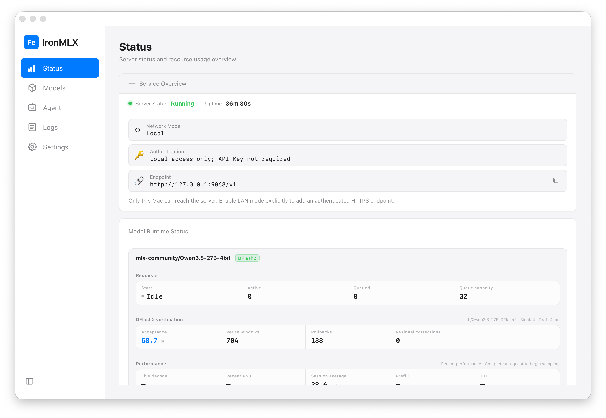

Built for Agent applications
Provide local model inference for Agent application scenarios.
__RELEASE_BADGE_EN__
LOCAL INFERENCE FOR APPLE SILICON
Run powerful open-source AI models privately and natively on your Mac.
__RC_DOWNLOAD_EN__

Provide local model inference for Agent application scenarios.
Use Apple Silicon acceleration to run and manage local models efficiently on your Mac.
Compatible with OpenAI and Anthropic APIs, providing a unified model interface for Agent applications and local tools.
SUPPORTED TODAY
Explore the supported model architectures and the requirements for your Mac.